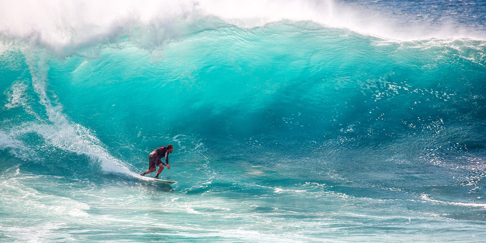

Maui
The island of Maui is one of the most sought after places to travel and surf than any in the world. I remember driving to the North Shore, mouth hanging open in awe of this part of the magical universe. I thought to myself... I am going to live in Hawaii one day...
The drive to Hana is a tourist favorite. Renting your car and treking this path in a reward in itself. Another amazing trail on this beautiful island and there's so much more. This is all an illusion of what its real. The closest thing to heaven in my opinion.
The island has a way of taking you into an alternate universe. One of mystery and awe, unicorns and rainbows, love and adventure. Weddings are amast in these parts... Love is all around.
Real Estate here is amongst some of the most expensive in the world. A moderate 3 bedroom home will cost you around 1 million dollars!
I was fortunate enough to travel with 2 of my good friends in a rented royal blue convertible Ford Mustang! So much fun to be had and more saved in the bank of memories for a life time.
My two favorite islands thus far! Hawaii has been calling my name for decades and I am hearing her loud and clear. Soon enough my Goddess Pele... I will be with you.